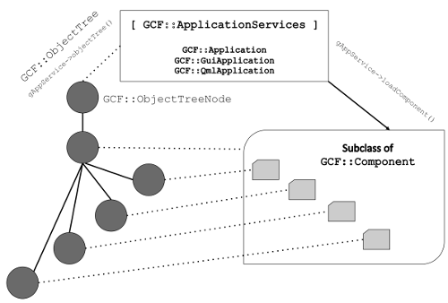

Table of Contents
GCF (Generic Component Framework) is primarily a component-framework library. Its "killer feature" is a component model that you can leverage in your applications to build "pluggable" and extensible applications on Windows, Linux and Mac OS.
This page provides an overview of the component model offered by GCF. A clear understand of the the component model will allow you to powerfully make use of it in your applications.
What is a component model?
A quick search on Google reveals this answer
GCF offers exactly that! GCF offers an architecture and an API that allows developers to define reusable segments of Qt code that can be combined to create Qt applications.
This page explains architecture of the component model offered by GCF, with links to API (classes and methods) that implement the model.
GCF Component model
GCF's component model comprises of two key concepts:
- Concept #1: Component - defined as an entity that plugs its objects and services into the application
AND
- Concept #2: Application - defined as an entity that locates components for loading and loads them
The concepts are captured and implemented in terms of
- A GCF::Component class from which you can subclass and implement virtual functions, to "plug" your objects and services into the application.
AND
- A GCF::ApplicationServices instance, to allow you to load components after locating them.
AND
- A bunch of helper classes like GCF::ObjectTree, GCF::ObjectList and so on for capturing the data of the component model.
Play the video below to get a sense of these concepts and how they come together in a GCF application.
If you are unable to view the video, the following bullet points summarize the content of the video.
|

|
Once all the components are loaded, the application's object tree would contain one sub-tree per component. Each of those sub-trees would contain one node for every object registered by the component with the application. Each node in the object-tree would contain a pointer to the QObject that they register.
The gFindObject method allow searching of objects in the object tree. You can search for objects by
- their path, which is a dot (.) separated list of names from the "Application" node to the object's node.
OR
- name of a class or interface that they implement
Since registered objects are searchable, we call them "exposed" objects.
Anatomy of the main() function of a GCF application
The code snippet below shows a typical main() function of a GCF application.
In the sub-sections below, each aspect of the main() function are explained in more detail.
Creating an application instance
You will need to create an instance of GCF::Application OR GCF::GuiApplication OR GCF::QmlApplication before any component is instantiated and loaded in the application.
- The GCF::Application class is available from GCF Core Module. You should create an instance of this class only if you are creating non-gui and console-only applications.
- The GCF::GuiApplication class is available from GCF Gui Module module. You should create an instance of this class when you are creating a widgets application.
- The GCF::QmlApplication class is available from GCF Quick Module module. You should create an instance of this class when you are creating a Qt-Quick application.
In GCF, there is a macro called gAppService that always points to the GCF::ApplicationServices part of a GCF application instance. There is a gApp macro that always points to an instance of
- GCF::Application in console-only applications,
- GCF::GuiApplication in widgets applications and
- GCF::QmlApplication in Qt Quick applications
The following diagram shows the class diagram of application classes in GCF.

While GCF::Application, GCF::GuiApplication and GCF::QmlApplication are direct subclasses of GCF::ApplicationServices, they are all not direct subclasses of QCoreApplication.
Because of this class design, the macro gApp would return a NULL pointer if
- you include
<GCF3/Application>in a GUI or Qt Quick application
OR
- you include
<GCF3/GuiApplication>in a Qt quick or console application
OR
- you include
<GCF3/QmlApplication>in a widgets or console application.
However, the macro gAppService would never be NULL if used in a GCF application.
The foundation component
All GCF applications should ideally offer a "foundation component" after which all other componts are loaded. Though it not compulsory, we encourage you to not write "surrogate" applications that can be configured to load any GCF component.
Typically the "foundation component" would set the core personality of the application and offer core services. Auxiliary components can then extend the core application or build on top of the core services offered by the application to expand its business and technology possibility.
In a GUI application, the "foundation component" would offer a main-window with predefined panels, menus, tool-bars, dialog boxes and service-dictionaries on to which auxiliary components will merge their UI elements (widgets, actions, menus etc..) and service objects.
In a console-application, the "foundation component" would offer a set of core services, objects and service-dictionaries on to which auxiliary components will merge their service objects.
The section on registering objects explains how object merging works.
Figuring out the components to load
Once the "foundation component" is instantiated and loaded, you would want to load auxiliary components.
If component classes are statically linked into your application, then you can simply create an instance of those components and invoke the load() method on them.
If your components are available for loading from shared libraries, then you can invent a mechanism to source the list of shared libraries that you want to load. You could for example
- read component names from an INI, XML or plain-text file and load them.
OR
- read component names from the Windows Registry and load them. (Of-course this would work only on Microsoft Windows).
OR
- make use of
QDirIteratorto iterate over all shared libraries in a predefined directory and load components from them.
OR
- hard-code the component names to load in the
main()function
OR
- fetch names of components to load from a license file or from a web-service.
Once you are clear about the set of components to load, you can make use of GCF::ApplicationServices::loadComponent() or GCF::ApplicationServices::loadComponents() to load the components.
Processing command-line arguments
Users of your application can pass command-line arguments of the form "-key:value". Such arguments can be captured into argumentsMap() and processed in the main() function by calling either
- processArguments() on the application object
OR
- processArgumentsAndExec() instead of
exec()on the application object.
By default, GCF processes the -loadComponents: command-line argument as a comma (,) separated list of component names. It then loads those components one after the other.
For example, users of your application could launch it from terminal like this
$ ./YourGCFApplication --loadComponents:Path1/Component1,Path2/Component2,Path3/Component3
This would cause your application to also load GCF components from Path1/Component1, Path2/Component2 and Path3/Component3 libraries. [NOTE: this would work only if you have explicitly invoked processArguments() OR processArgumentsAndExec() on your application object in the main() function]
- Note
- If you are going to make use of GCF Investigator to record and/or run test-scripts, then you have to process arguments.
Triggering the event loop
Finally, you should call the exec() (or processArgumentsAndExec()) function on the application object to trigger the event loop and actually "start" your application.
Authoring GCF components
As stated before, a component in GCF is defined as an entity that plugs its objects into the application. Stated in another way, GCF components are basically factories of objects. They instantiate objects and register with the application. The actual process of registering objects is explained in a later section.
Creating a component in GCF is simply a matter of subclassing from GCF::Component or any of its subclasses like GCF::QmlComponent and GCF::GuiComponent. You can then instantiate it and invoke the GCF::Component::load() function on it to load the component.
Instantiating the component is simply a matter of calling the component class's constructor, if the component class is linked into the application.
If the component class is available in a dynamically loadable library, then you can either
- call GCF::ApplicationServices::instantiateComponent() and then GCF::Component::load() on the component returned by it
OR
- call GCF::ApplicationServices::loadComponent() to both instantiate and load the component from a library in one shot.
For a component class to be loadable from a dynamically loadable library, you should make use of the GCF_EXPORT_MACRO macro to export the component. This macro must be written exactly once in a library and in a source file.
How component loading works
Components can be loaded using any of the following means
- Create an instance of the component class and then call the load() method.
- Call the GCF::ApplicationServices::loadComponent() method with a component-library name as parameter
- Call the GCF::ApplicationServices::loadComponent() method with a component pointer (
GCF::Component*) as parameter. - Call the GCF::ApplicationServices::instantiateComponent() method to create an instance of the component from a shared-library and then call load() on it.
During the load process several events are despatched by GCF to the component. These events can be handled by either reimplementing the QObject::event() method or any of the specialized event handler methods offered as virtual functions in GCF::Component. We recommend doing the latter.
The following video explains the flow of events during component load.
How component unloading works
By default all components are unloaded when the application is about to quit. However, components can be explicitly unloaded using any of the following means.
Components can be unloaded using any of the following means
- Calling the unload() method on the component object.
- Call the GCF::ApplicationServices::unloadComponent() method with a component pointer (
GCF::Component*) as parameter.
During the unload process several events are despatched by GCF to the component. These events can be handled by either reimplementing the QObject::event() method or any of the specialized event handler methods offered as virtual functions in GCF::Component. We recommend doing the latter.
The following video explains the flow of events during component unload.
Registering objects
The process of including a pointer to an object into the object tree is called "registering the object". Once registered, the object is available for access from other components. The objects are "exposed", so to speak.
A component can register its objects in three ways
- It can list its objects in a content-file and reimplement the GCF::Component::contentObjectLoadEvent() event handler to load a named object, so that they are included in the object tree.
- You can call GCF::Component::addContentObject() method anytime after the post-initialization event is delivered to GCF::Component::initializeEvent(), with object-name and object-pointer as parameters to include the object in the object-tree.
- You can create an instance of GCF::ObjectTreeNode under any pre-existing node in the object tree to include a pointer to your
QObject.
We will now look at each method independently.
Component content file
While handling the pre-content-load event in GCF::Component::contentLoadEvent(), components can specify a content file for GCF to process and load. The content file is a XML file whose primary purpose is to provide a list of objects that need to be loaded during GCF::Component::load(). A typical content file would look like this
<content>
<object name="a" />
<object name="b" />
<object name="c" />
<object name="d" />
</content>
Basically the content-file contains content XML element as root and a series of object XML elements. Each object XML element must have a name attribute, otherwise it is ignored by GCF. Object names must be unique within the component, otherwise GCF will attempt to make it unique by adding some characters at the end of the name.
The object XML element can contain additional attributes, some of which have implicit meanings. Please read the page on Content XML File Specification to know more about attributes and their meaning.
Whenever GCF parses a object XML element, it sends a GCF::ContentObjectLoadEvent to the component. Along with this event GCF will send the name of the object in question and a key=value map of all other attributes in the object XML element.
The component can handle this event in GCF::Component::contentObjectLoadEvent() to
- actually load the object (as a
QObjectinstance)
AND
- use the GCF::ContentObjectLoadEvent::setObject() method on the event object, passed as parameter to the event handler, to send back pointer to the
QObjectthat was just loaded
After the GCF::Component::contentObjectLoadEvent() returns, GCF looks for value of the parent attribute. The value of parent attribute has to be a path to an already registered object in the application. If the path corresponds to an object owned by another component, then a GCF::ContentObjectMergeEvent is sent to that component. This event can be handled in the GCF::Component::contentObjectMergeEvent() of the parent object's component to perform object-merging. Components can customize the way in which merging happens by reimplementing contentObjectMergeEvent(). By default
- GCF::Component's implementation of the
contentObjectMergeEvent()simply makes use ofQObject::setParent()to perform the merging.
- GCF::GuiComponent's implementation of
contentObjectMergeEvent()takes into account the kind of parent and child that is being merged and performs merging accordingly. For example, if the child is anQActionand parent is aQMenu, it inserts the action as a menu-item in the menu. For a complete list of combinations that are handled, please read the documentation of GCF::GuiComponent::contentObjectMergeEvent()
- GCF::QmlComponent's implementation of
contentObjectMergeEvent()ignores merging between two QML objects.
The following video explains the whole process of loading and merging of objects, with the help of an example.
Using addContentObject() function
During and after the post-initialization event, components can make use of GCF::Component::addContentObject() to explicitly register objects with the application.
Explicitly creating object-tree-nodes
From any part of the application, you can create an instance of GCF::ObjectTreeNode under any node in the gAppService->objectTree(). Example:
While addContentObject() function can be used to add an object under the node of a component in the object-tree, creating object-tree-nodes by yourself allows you to include your object in any part of the object-tree.
- Note
- It is not possible to explicitly create nodes OR use addContentObject() to add an object and merge it with another object in the applicaiton. Object merging is possible only when you use content-xml files.
Searching for objects
The ability to discover objects and functionality from different components is very important. GCF offers two ways for doing this
Using gFindObject and gFindObjects
Once an object is registered with GCF, it is considered to be "exposed". Exposed objects can be searched by making use of the gFindObject() method. This method can be used to find objects based on their object path in gAppService->objectTree() or based on the class or interface type that they implement.
Example:
You can make use of the gFindObjects() method to get a list of all objects of a particular class or interface.
Connecting to nodeAdded() signal of gAppService->objectTree()
As mentioned before, every time an object is registered; a node for the same is created and included in the object-tree. The object-tree (of type GCF::ObjectTree) emits a GCF::ObjectTree::nodeAdded() signal. This signal can be connected to a slot to get notified whenever an object is included in the object tree. You could then examine the object that just got added and store it in an internal list if required.
Example:
How application shut down works
When an application is about to shut down, it unloads each and every component in the application in the reverse order of their loading. At the end of this cycle the application's event loop is terminated and the main() function returns, causing the application-process to quit.
Suggested reading
Next, please read the article on Getting started with GCF. This will help you to understand the GCF 3 concepts in action!